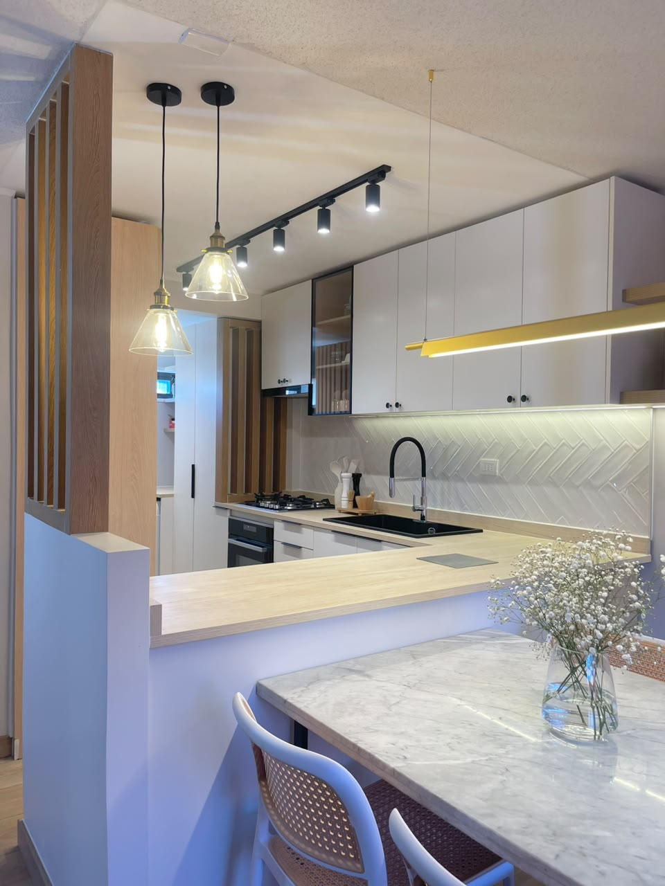
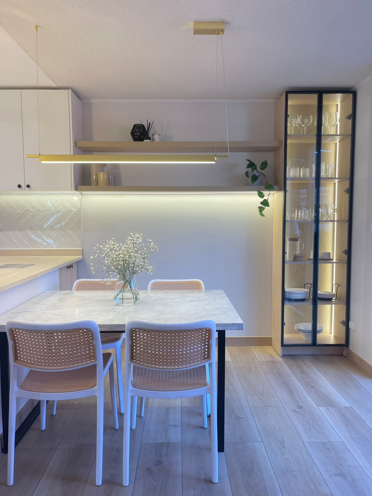
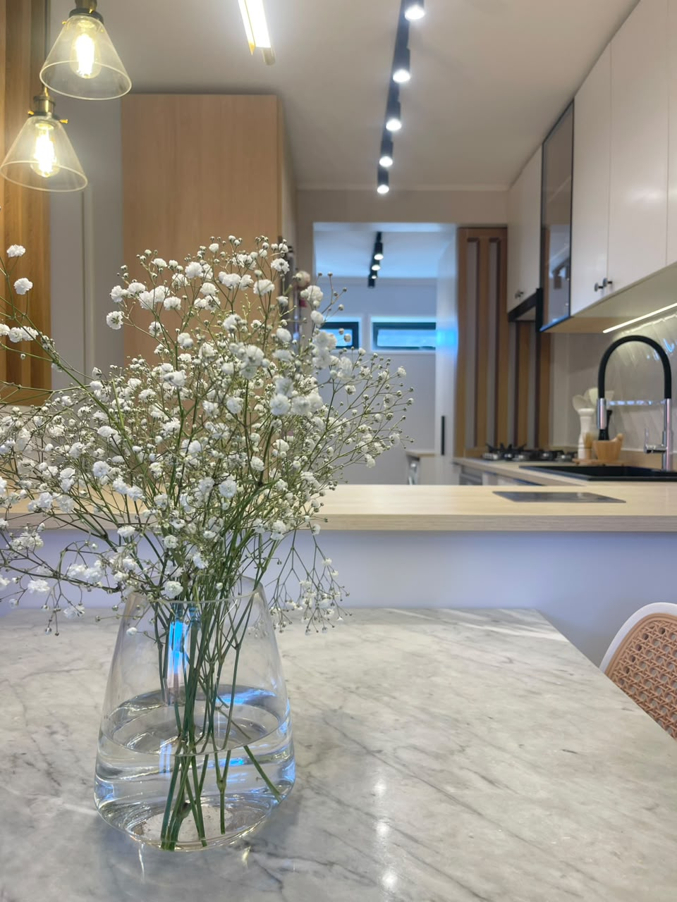
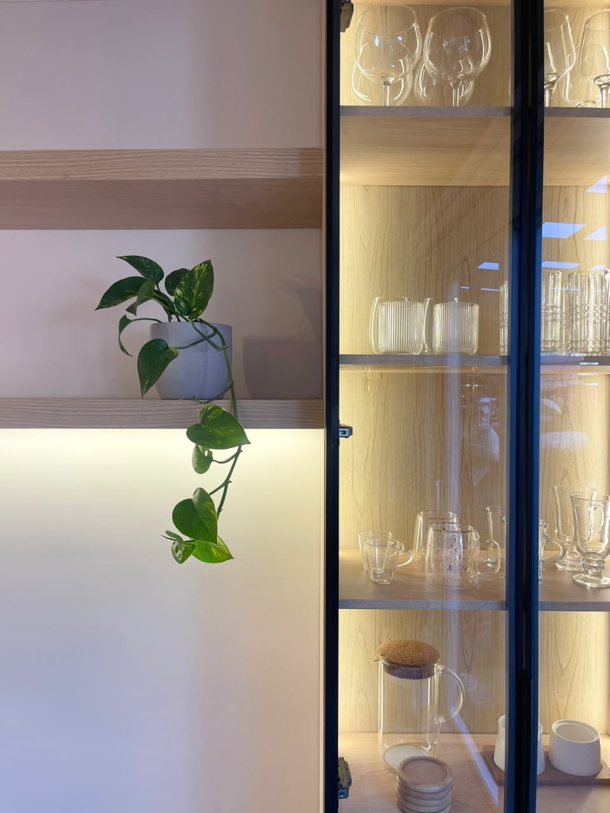
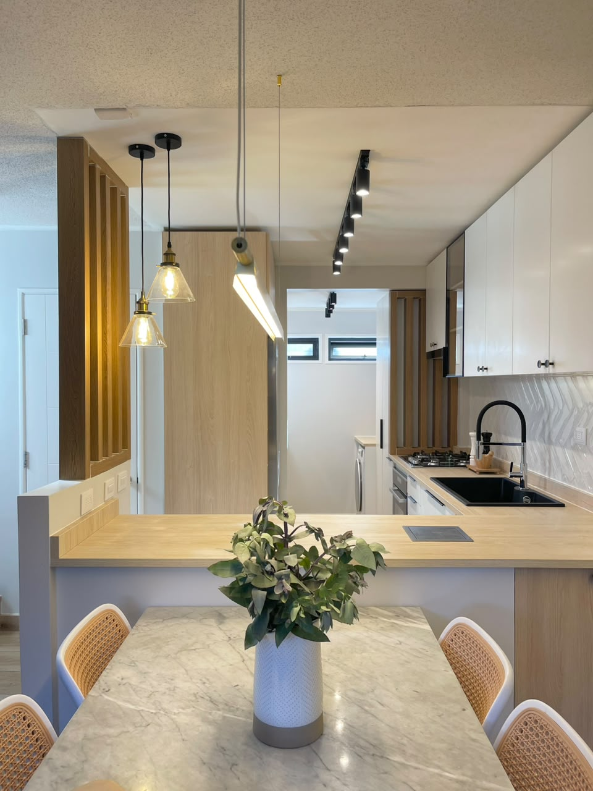
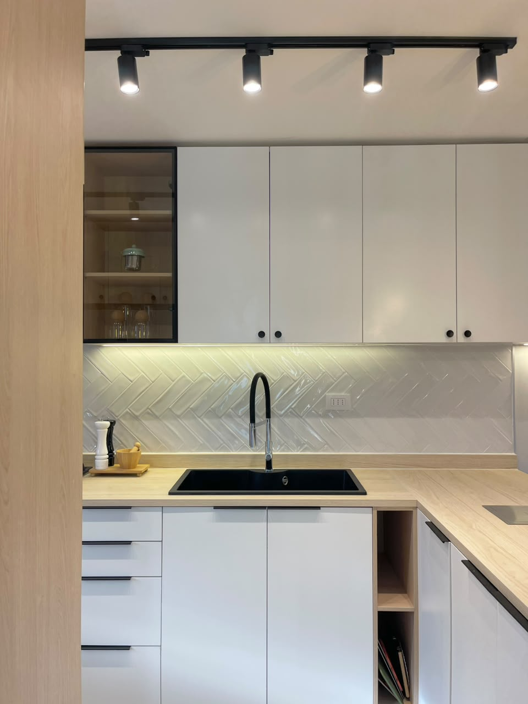
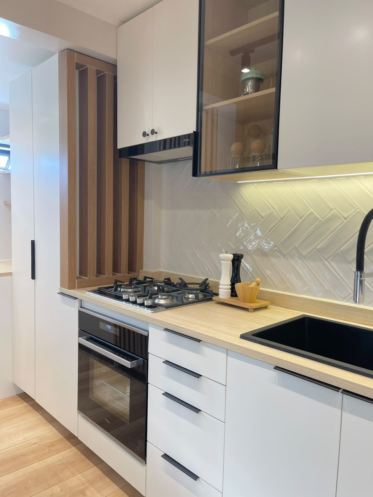
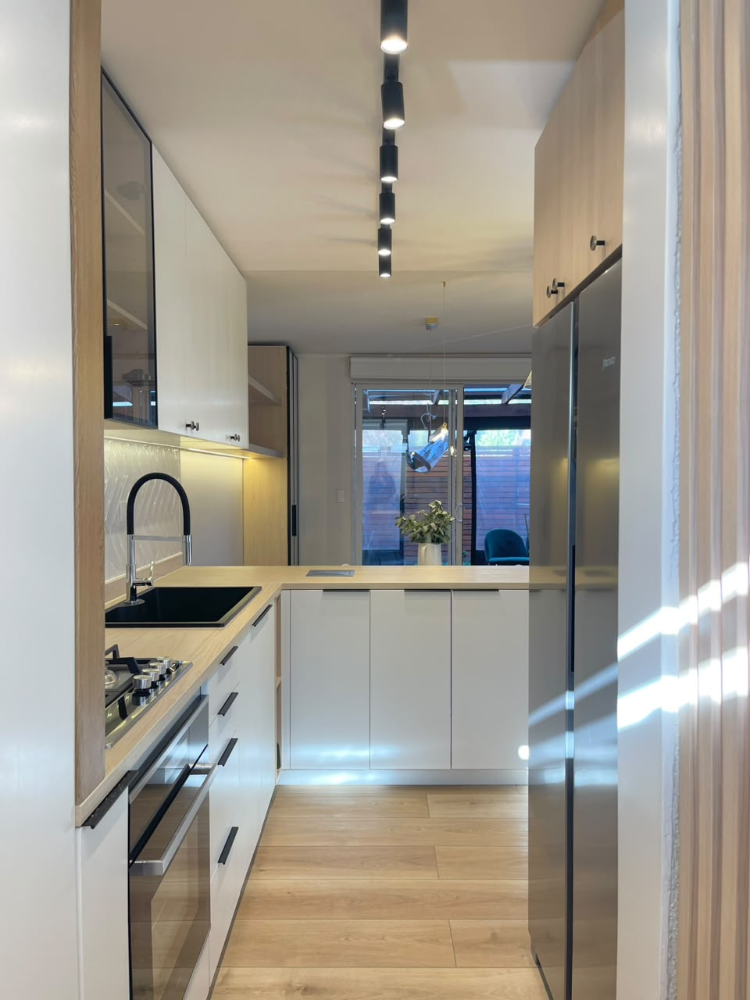

Cocina JM
Una remodelación residencial que convierte la cocina en un espacio claro, luminoso y generoso para la vida cotidiana.

El proyecto
Orden, luz y encuentro en el corazón de la casa.
La nueva distribución reúne preparación, almacenamiento y comedor en una secuencia continua. Maderas claras, superficies blancas y acentos negros construyen contraste, mientras la iluminación puntual acompaña cada área de trabajo.
Desde una mirada centrada en la experiencia de habitar, el proyecto busca que los usos cotidianos sean intuitivos y que la cocina pueda abrirse con naturalidad a las conversaciones y encuentros.






